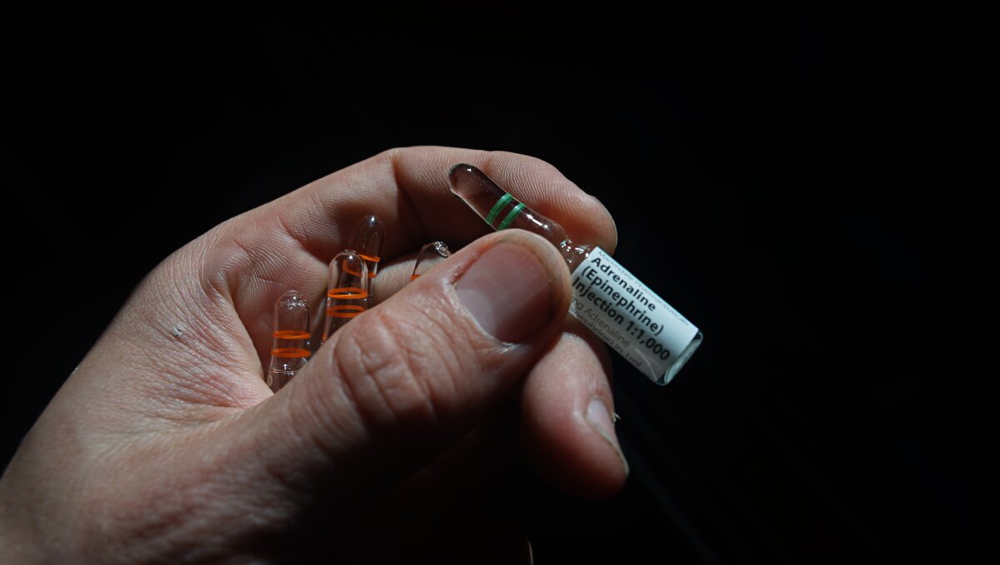

first aid kit
Basic First-aid kit:

Clearly mark the first-aid kit with a red cross, and make sure everyone aboards knows where it is. Keep a list inside of the items you use, and be sure to top off the kit every year or so. Also, see ditch bag.
Do not get all of the items below without doing thorough research yourself. You may not need all of these items. Do not blindly buy a pre-made kit, make a list of likely ailments and situations and get good quality medicine and first-aid kit items individually(sourced in-person from local pharmacies).
Make sure that you understand how to administer medicine, or to practice wound care, to a patient before attempting it. Take a first-aid course, read manuals, etc.
We'll say it again, when assembling a first-aid or a medicine kit, consult rigorously peer-reviewed scientific research, make a list, and get individual items suited for your unique needs and situation.
Check out our illustrated notes on building a first-aid kit on Rabbit Waves.
- Sterile gauze pads(Small & large squares to place over wounds. Must be secured with medical tape, surgical tape, or safety pins)
- Medical tape(To secure dressings, to hold medical devices on the body, such as a catheter, to protect areas against chafe, etc.)
- Surgical tape(A stronger, very sticky, tape to close surgical incisions, to secure dressing, for makeshift bandages, e.g, 3M Transpore)
- Roller and triangular bandages(To hold dressings in place or to make an arm sling)
- Adhesive bandages(Assorted sizes, e.g, Elastoplast, Opsite & Compeed)
- Medical scissors
- Tweezers(For removing ticks, to manipulate sutures, or for other delicate medical tasks)
- Safety pins(To tie off bandages, and multiple other uses)
- Instant ice packs
- Instant heat packs
- Disposable non-latex gloves(Such as surgical or examination gloves)
- Burn care dressing(To care for minor burns. Water Jel, Burncare, Alocane, Second Skin, etc.)
- Antiseptic wipes or soap
- Pencil and pad
- Permanent marker(To write medical information on skin or other materials)
- Emergency blanket
- Eye patches(Worn when healing from surgery, an injury, or an eye disease)
- Thermometer(Forehead strip, and/or full-sized thermometer)
- A good first-aid manual
- 5% vinegar(See jellyfish stings)
Basic Medicine kit:

Always read about a medicine before using it. If administering medicine to another person, ask about their allergies, past medical history, last oral intake, etc. Some medicines can cause severe allergic reactions, or may interact with other medicine(e.g,: Ibuprofen is contraindicated for anyone with heart issues, regardless of their age).
Note: For very strong over-the-counter pain relief, combine variations of paracetamol, ibuprofen and codeine, paying attention **not to double dose** with paracetamol.
Never administer anything to anyone without their consent.
- Antifungal cream(Yeast infections, e.g. Canesten)
- Laxative(Oral. Constipation relief.
- Ibuprofen(Oral. Minor pain, fever reducer, e.g., toothaches, menstrual cramps, and headaches)
- Aspirin(Oral. Pain, fever, inflammation reducer, e.g., to treat and prevent heart attacks, strokes, and chest pain)
- Antihistamines(Allergy relief)
- Anti-nausea(Scopolamine patches, dimenhydrinate/dramamine, Meclizine, Promethazine, and Ephedrine)
- Ear drops(To treat pain, inflammation, infection & earwax blockage. There are different formulations for each ailment)
- Eye wash and solution
- Insect repellant(Must include picaridin[also known as icaridin], DEET, ethyl butylacetylaminopropionate [IR3535], or oil of lemon eucalyptus[containing p-menthane-3,8-diol, PMD])
- Hand sanitizer(60-95% alcohol content)
Details
To reduce germs on skin, aim ethyl alcohol or isopropyl alcohol. To protect against diarrheal illnesses, including rotavirus and norovirus, wash hands with soap and water instead. - Hydrocortisone(To combat inflammation, severe itching. Used topically for allergic rashes, eczema, psoriasis, itching, and other inflammatory skin conditions, & to treat hemorrhoids[as a suppository])
- Calamine lotion(Insect bites, mild itchiness)
- Topical anesthetic
Details
To reduce pain, or itchiness on the skin, eyes, the inside of the nose, ear or throat, the anus and the genital area(different formulations for each area). Topical anesthetics come in creams, ointments, aerosols, sprays, lotions, and jellies. Examples include benzocaine, pramocaine, butamben, dibucaine, lidocaine, oxybuprocaine, pramoxine, proxymetacaine (proparacaine), and tetracaine (also named amethocaine). - Antibiotic(Oral. To treat bacterial infections, traveler's diarrhea, & gastrointestinal infections, e.g, amoxicillin, azithromycin, cephalexin, and ciprofloxacin)
- Acetaminophen/Paracetamol.(Oral. For severe pain relief, fever reducer. Has the least side effects, e.g, padanol, tylenol)
- Topical antibiotic(Ointment & powder, e.g. Bacitracin, Polysporin, and Neosporine. Topical ointment. Prevents infection. For minor scrapes, cuts, and burns. Powder is useful for bad burns that are too painful to touch, and to prevent infection in deep cuts)
- Sunscreen(SPF 30)
- Hydrogen peroxide, 3% dilution(Wound disinfectant. Good for initial cleaning, not for prolonged use on the same area. Antiseptic, useful to sterilize tools & surfaces)
- Aloe vera gel with lidocaine(Burn relief)
- Antidiarrheal(For diarrhea relief, e.g., s loperamide like Imodium, diphenoxylate, bismuth subsalicylate like Pepto-Bismol, cholestyramine, and octreotide)
- Hydration tablets/powder or salt tablets(Post-sickness, or dehydration replenishment of minerals and salt, e.g, Dioralyte sachets, Phizz hydration tablets, saltstick dispenser)
- Anti-chafe cream(Protects skin against irritation due to chafing, moisture, ill-fitting clothing, physical activity, heat and humidity, etc. Look for products with combinations of cocos nucifera, glycerin or caprylic/capric triglyceride, aloe vera, zinc oxide, cornstarch, vitamin E, and kaolin clay)
- Antiseptic cream(Prevent infections caused by minor cuts, scrapes & burns, e.g, Savlon Cream)
- Distilled water(Clean water when cleaning wounds, or washing down medical equipment)
- Rubbing alcohol(Isopropyl and water. Antibacterial. Used to disinfect wounds with a cotton pad, tools or surfaces. Will evaporate quickly, don't use on varnished wood)
- Zinc Oxide cream(For skin irritations, like chafing and sunburns. It helps in wound healing in preventing bacterial infections, to lock-in moisture, as sunscreen, etc.)
- Decongestant nasal spray
- Codeine
Details
To treat mild to moderate pain. Possible to combine with paracetamol (as co-codamol: e.g., brands Paracod, Panadeine, and the Tylenol-with-codeine series, including Tylenol 3 and 1, 2, and 4), with aspirin (co-codaprin), or with ibuprofen (Nurofen Plus). These combinations provide greater pain relief than either agent alone.
Add-ons:
- Hot water bottle(For hypothermia)
- Staple gun(For closing up wounds)
- Epinephrine(Vials, or Allerject/AUVI-Q. Avoid EpiPens, they are grifters)
- Tourniquet
- Hemostatic dressing with coagulant(To cover and stop severe bleeding, like head wounds, e.g. QuikClot)
- Emergency bandage(Also known as Israeli bandage. Possible to apply one-handed, to oneself. Designed to apply pressure to a wound, easy to secure in place)
- Scalpel with sterile blades(To remove splinters, boils, etc.)
- Multitool
- Irrigation syringe(In wound irrigation to remove debris and bacteria, during medical procedures to flush fluids or medications into specific areas of the body, and for ear and nasal irrigation to remove excess earwax or nasal congestion)
- Compression bandage(To treat sprains or strain, helps to reduce swelling)
- Reinforced sterile skin closures
- CPR pocket mask
Details
To protect both the caregiver and the patient at risk of exposure to body fluids when performing CPR. It also creates an airtight seal over the patient's mouth and nose. A one-way valve allows air to flow into the victim’s lungs while also keeping the caregiver cut off from the patient’s air, spit, blood, vomit or other fluids. Not only does this help keep the nose closed, but it also protects against the transmission of bacteria, viruses, and diseases during this procedure. - Povidone surgical scrubs(Iodine. Antiseptic. Used to reduce bacteria on the skin prior to surgery or patient care, or for handwashing)
- Sterile sutures(Thread with needle)
- Emergency dental kit
Details
- Debacterol(For canker sores)
- Zinc Oxide Eugenol cement(For temporary cementation of a prosthesis)
- Light cure cavity liner
- LED curing light
- Hemostatic dental dressing(E.g., HemCon. Oral wound care, like after tooth extraction, or trauma), braided cotton rolls(to absorb saliva/fluids to keep operative areas free of excess moisture)
- Single use sterile syringes and barrels
- Dental mirror
- Medicated paste(For dry socket, oral pain relief, usually contains eugenol, e.g., Orca)
- EMT toothsaver(Formulation to store a knocked-out tooth and protect it from cell damage and dehydration until dental care is available)
- Local anesthetic injection(Marcaine HCI 5% with epinephrine anesthetic carpules)
- Topical local anesthetic(LolliCaine 20% Benzocaine Gel, for fast temporary relief during periodontal curettage, local injections, scaling, root planing and other dental procedures)
- Periodontal surgical dressing(Provides protection over injured tissue, e.g, Barricaid)
- Headlamp
- Etc.
The information on this page was primarily advised by a great numbers of sailors we've met throughout the years, on our travels, but also online, many of whom put their own kits together with advice from a doctor. We've also gathered information from mountaineers, trusted adventurous friends, and street medics.
Thank you SY Maya, SY Totem, CC O'Hanlon(sailor), Andy Kirkpatrick(Mountaineer), Riot Medicine, Paul G. Gill Jr. M.D., people on the Fediverse, and The Canadian Red Cross with whom Rek did first-aid training with.